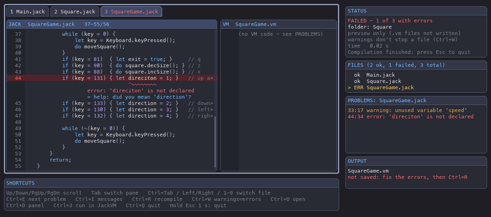

Jack Compiler for nand2tetris


📖 Documentation: https://kpillai2017.github.io/jack-compiler/
🎮 Run what you compile: jackvm-py, the companion Jack VM with a game window and memory debugger. See Using it with JackVM.
A complete, production-ready Jack compiler implementation using ANTLR4 that translates Jack source code to Hack Virtual Machine (VM) code.
Overview
This compiler implements the full Jack language specification from the nand2tetris course. It is built with Terence Parr's ANTLR4 parser generator and includes:
- Lexical Analysis: Tokenization with full comment and string literal support
- Syntax Analysis: Complete ANTLR4 grammar with visitor pattern implementation
- Semantic Analysis: Symbol table management with class and subroutine scopes, type tracking
- Code Generation: Translation to Hack VM bytecode format
- Comprehensive Testing: Unit tests plus end-to-end golden-file tests, run on every push via GitHub Actions
Features
✅ Language Support - Variables: static, field, local, and parameter variables - Data Types: int, boolean, String, and custom class types - Operators: arithmetic, relational, logical, and unary operators - Control Flow: if/else statements, while loops, function calls - Subroutines: functions, methods, and constructors with proper scoping - Arrays: single-dimensional array operations - String & Integer Literals: with proper character encoding - Comments: single-line (//) and block (/ /) comments
✅ Code Quality - Clean separation of concerns (lexer, parser, symbol table, code generation) - ANTLR4 visitor pattern for AST traversal - Proper symbol table scoping (class and subroutine levels) - Comprehensive error handling
✅ Usability - Simple command-line interface - Single file and batch directory compilation - Example programs demonstrating all language features - Detailed documentation and usage guide
Project Structure
jack-compiler/
├── .github/workflows/ci.yml # GitHub Actions: tests + grammar drift check
├── .gitignore / .gitattributes
├── LICENSE # MIT
├── README.md # This file
├── USAGE.md # Detailed usage guide
├── ARCHITECTURE.md # Architecture documentation
├── QUICK_REFERENCE.md # Quick reference guide
├── ERROR_DETECTION.md # Error handling documentation
├── REFERENCE_COMPATIBILITY.md # Compatibility with the nand2tetris web-ide
├── IMPLEMENTATION_SUMMARY.md # Implementation overview
├── pyproject.toml # Package configuration (provides `jackc` and `jackc-gui`)
├── requirements.txt # Runtime dependency pin
├── antlr-4.13.0-complete.jar # ANTLR4 tool (only needed to regenerate the parser)
│
├── jack_compiler/ # SOURCE CODE (Python package)
│ ├── __init__.py # Public API
│ ├── __main__.py # Enables `python -m jack_compiler`
│ ├── compiler.py # Compiler driver + CLI (`jackc`)
│ ├── compiler_visitor.py # Parse-tree visitor: AST + VM code generation
│ ├── symbols.py # Symbol table implementation
│ ├── codegen.py # VM code emitter
│ ├── gui/ # pygame front end (`jackc-gui`), see "Graphical Interface"
│ └── antlr_generated/ # ANTLR4-generated lexer/parser (committed)
│ └── grammar/
│
├── grammar/
│ └── Jack.g4 # ANTLR4 grammar for the Jack language
├── examples/ # Example Jack programs
├── tests/
│ ├── test_compiler.py # Unit, end-to-end and CLI tests
│ └── expected/ # Golden VM output for the examples
└── docs/ # HTML documentation site (published via GitHub Pages)
Quick Start
git clone https://github.com/kpillai2017/jack-compiler.git
cd jack-compiler
python3 -m venv venv && source venv/bin/activate # Windows: venv\Scripts\activate
pip install --upgrade pip
pip install -e ".[dev]"
jackc examples/HelloWorld.jack # writes examples/HelloWorld.vm
jackc examples/ -o output/ # compile a whole directory
pytest # run the test suite
No Java is required to use the compiler — the generated parser is committed.
Installation Details
Prerequisites
- Python 3.8 or higher
- pip 21.3+ (for editable installs from
pyproject.toml) - Java JDK 11+ — only if you modify
grammar/Jack.g4
Install options
pip install -e ".[dev]" # editable install + pytest (recommended for development)
pip install . # regular install
pip install -r requirements.txt && python -m jack_compiler ... # no install, run from repo root
Regenerating the Parser and Lexer
Only needed after editing grammar/Jack.g4:
java -jar antlr-4.13.0-complete.jar \
-Dlanguage=Python3 \
-visitor \
-o jack_compiler/antlr_generated \
grammar/Jack.g4
Generated files are written to jack_compiler/antlr_generated/grammar/. Commit them —
CI regenerates the parser and fails if the committed files are out of date.
Troubleshooting
"jackc: command not found"
Activate your virtual environment and run pip install -e ., or use python -m jack_compiler from the repository root.
"ModuleNotFoundError: No module named 'antlr4'"
pip install -r requirements.txt
"editable mode currently requires a setuptools-based build"
Your pip is too old for pyproject.toml editable installs: pip install --upgrade pip.
"Java not found" (only when regenerating the parser)
- macOS:
brew install openjdk - Ubuntu/Debian:
sudo apt-get install openjdk-17-jdk - Windows:
choco install openjdkor download from adoptium.net
Example Programs
Example 1: Hello World
class HelloWorld {
function void main() {
do Output.printString("Hello, World!");
do Output.println();
return;
}
}
Example 2: Arithmetic & Variables
class Math {
function void main() {
var int x, y, sum;
let x = 10;
let y = 20;
let sum = x + y;
do Output.printInt(sum);
return;
}
}
Example 3: Loops
class Loop {
function void main() {
var int i, sum;
let i = 0;
let sum = 0;
while (i < 10) {
let i = i + 1;
let sum = sum + i;
}
do Output.printInt(sum);
return;
}
}
Example 4: Object-Oriented Programming
class Point {
field int x, y;
constructor Point new(int px, int py) {
let x = px;
let y = py;
return this;
}
method int getX() {
return x;
}
method void dispose() {
do Memory.deAlloc(this);
return;
}
}
See USAGE.md for more detailed examples and advanced usage.
Architecture
Compilation Pipeline
Jack Source Code
↓
[Lexer] (ANTLR4 generated)
↓
Token Stream
↓
[Parser] (ANTLR4 generated)
↓
Parse Tree
↓
[Visitor] Traverses tree, manages symbol table
↓
[Code Generator] Emits VM instructions
↓
Hack VM Code
Symbol Table Design
Two-level scoping: - Class Scope: Static and field variables (persistent across all subroutines) - Subroutine Scope: Local variables and parameters (reset for each subroutine)
Variables are tracked with: - Name, type, kind (static/field/local/arg), and index - Proper handling of implicit 'this' pointer for methods
Code Generation Strategy
- Stack-based VM architecture
- Direct instruction emission for each language construct
- Label generation for control flow (if/while)
- Proper handling of method calls with implicit 'this'
- String literal generation through character appending
Testing
pytest -v
Tests cover:
- Symbol table operations (define, lookup, scoping)
- Code generation (arithmetic, jumps, function calls, strings)
- End-to-end compilation of every program in examples/, compared byte-for-byte with tests/expected/*.vm
- CLI behaviour and error handling (syntax errors, missing files)
If you intentionally change code generation, regenerate the golden files:
for f in examples/*.jack; do jackc "$f" -o "tests/expected/$(basename "${f%.jack}").vm"; done
Command-Line Usage
jackc [-h] [-o OUTPUT] [-r] [--clean] [-n] [-v] [--version] input
# or: python -m jack_compiler ...
Arguments:
input Input Jack file or directory
-o, --output OUTPUT Output VM file or directory (default: same as input)
-r, --recursive Also compile sub-directories, mirroring the tree under OUTPUT
--clean Delete ALL existing .vm files in each output directory first
(single file: only its own .vm)
-n, --dry-run Show what would be cleaned/compiled; change nothing
-v, --verbose Show full tracebacks for internal compiler errors
-w, --no-warnings Do not print warnings (errors are always shown)
--werror Treat warnings as errors
--version Show version and exit
-h, --help Show help message
Batch compilation
jackc src/ # every .jack in src/ (not sub-directories)
jackc -r projects/ # whole tree, .vm written next to each .jack
jackc -r projects/ -o build/ # whole tree, mirrored under build/
jackc -r --clean --dry-run projects/ # preview a clean rebuild
jackc -r --clean projects/ # clean rebuild (no stale .vm left if a file fails)
Hidden directories (e.g. .git, .venv) are skipped. --clean only touches
directories that receive output, but removes every .vm file there — use
--dry-run first if those directories contain hand-written VM code.
Exit status is non-zero if any file fails; a summary lists the failed files.
Coloured output is disabled automatically when stdout is not a terminal or when NO_COLOR is set.
Python API
from jack_compiler import JackCompiler, JackSyntaxError
JackCompiler().compile_file("Main.jack", "Main.vm") # returns True/False
try:
vm_code = JackCompiler().compile_source("Main.jack") # returns VM code as a string
except JackSyntaxError as e:
print("\n".join(e.errors)) # "Main.jack:4:9: ..." (1-based)
Errors and warnings are reported compiler-style, with the source line and a
^~~~ marker under the exact spot:
Main.jack:14:13: error: 'cuont' is not declared
14 | let cuont = 1;
| ^~~~~
= help: did you mean 'count'?
Besides syntax errors, a semantic pass catches undeclared or duplicate names,
methods called without an object, wrong argument counts, missing returns and
more, and warns about unused variables and unreachable code. See
ERROR_DETECTION.md.
Graphical Interface (jackc-gui)
A pygame window for compiling and browsing the result, styled like the jackvm-py player, so the compiler and the VM feel like one tool. The full guide is The Compiler Window (docs/gui.html).

pip install -e ".[gui]" # adds pygame
jackc-gui # choose a .jack file or folder in a window
jackc-gui examples/ # compile a folder straight away
jackc-gui examples/Math.jack # ...or one file
jackc-gui -r projects/ # a whole tree, like jackc -r
jackc-gui src/ -o bin/ # write the .vm files to bin/
jackc-gui --no-write src/ # preview only: never write .vm files
jackc-gui --werror src/ # warnings count as errors, like jackc --werror
python -m jack_compiler.gui ... # the same, without installing
The window shows the selected .jack file next to the VM code it compiles to.
Errors and warnings appear the way the compiler prints them: the line is shaded
red or amber, and a ^~~~ marker under the exact spot carries the message,
with any help: / note: lines beneath it. Beside them are the
STATUS / FILES / PROBLEMS / OUTPUT boxes, and under them a SHORTCUTS box.
.vm files are written where jackc would put them.
| Key | Action |
|---|---|
| Up / Down / PgUp / PgDn / Home / End, mouse wheel | Scroll the code |
| Tab (or click a pane) | Switch between the Jack and VM panes |
| Click a file tab, Ctrl+Tab / Ctrl+Shift+Tab, Ctrl+PgDn / Ctrl+PgUp, Left / Right, 1–9, wheel over the tabs, or click in FILES | Switch file: both panes show that .jack file and its compiled VM code |
| Ctrl+E | Jump to the next error or warning |
| Ctrl+I | Show / hide the compiler messages under the code |
| Ctrl+R | Recompile (re-reads the files, so edit in your editor and press Ctrl+R) |
| Ctrl+W | Warnings count as errors (like --werror), or back again; recompiles. STATUS shows which |
| Ctrl+J | Run the program in JackVM, if it's installed (details) |
| Ctrl+O | Open another file or folder |
| Ctrl+D | Show / hide the info panel |
| Ctrl+Q | Quit |
| Esc | Quit. The rules are the same as the jackvm player: hold for 1 s while a compilation is running (a progress bar appears after 0.25 s; letting go cancels), but a single press once it has finished. In the file picker, Esc cancels. |
Using it with JackVM
jackvm-py is a companion project in its own repository: a Jack virtual machine with a game window and a live memory debugger. The two are cloned and installed separately, and neither one needs the other. When both are installed, each one adds a shortcut to the other:
| From | What you get |
|---|---|
jackc-gui |
Ctrl+J runs the program you're looking at in a JackVM window. "The program" is every .jack file in the selected tab's folder, and all of them must compile without errors. The VM code goes to a temporary folder, so it works with --no-write too. Press Ctrl+J again to restart it with your latest changes. |
jackvm |
jackvm path/to/MyGame/ runs Jack source: it calls jackc first. The file picker offers [compile+play] for .jack folders. If the code has a mistake, Ctrl+J opens it in jackc-gui. |
Set it up once, side by side:
git clone https://github.com/kpillai2017/jack-compiler.git
git clone https://github.com/kpillai2017/jackvm-py.git
python3 -m venv .venv && source .venv/bin/activate
pip install -e "./jack-compiler[gui]" -e ./jackvm-py # one environment: found automatically
How each app finds the other (the first match wins; see
jack_compiler/integrations.py):
- An environment variable:
JACKVM(andJACKC/JACKC_GUIfor the other direction) holds the command to run, e.g.JACKVM="/path/to/jackvm-py/.venv/bin/jackvm". Set it tooffto hide the shortcut. - The same Python environment: each package registers itself in the
jack_toolsentry-point group, sopip install -eis all you need. - The
PATH: ajackvmcommand installed elsewhere (another virtual environment,pipx install, ...).
If JackVM isn't found, the SHORTCUTS box shows Ctrl+J JackVM (not installed),
and pressing it shows the install command. The apps only run each other's
command-line tools and never import each other's code. That way either repo
can change its internals without breaking the other.
Supported Jack Language Constructs
Statements
let- Variable assignment (including array elements)if/else- Conditional executionwhile- Loop executiondo- Subroutine call statementsreturn- Function return
Expressions
- Arithmetic:
+-*/ - Relational:
<>= - Logical:
&|~ - Unary:
-~
Declarations
- Class-level:
static,field - Subroutine-level:
var - Parameters: implicit for methods
Types
- Primitive:
int,char,boolean - Classes:
String,Array(from the Jack OS) and your own classes
Subroutine Types
function- Static method (no 'this')method- Instance method (implicit 'this')constructor- Constructor (returns 'this')
VM Output Format
Generated code follows the Hack VM specification: - Memory segments: local, argument, static, this, that, constant, pointer, temp - Arithmetic: add, sub, neg, mul, div - Comparison: eq, lt, gt - Logical: and, or, not - Control flow: label, goto, if-goto - Functions: function, call, return
Performance Characteristics
- Single Pass Compilation: Parse tree traversal in one pass
- Memory Efficient: Symbol table uses minimal memory
- Fast Generation: Direct instruction emission
- Scalability: Successfully compiles complex programs with multiple classes and methods
Integration with Nand2Tetris
To run the compiled program straight away, use jackvm-py (see Using it with JackVM). Or use the course's own tools:
-
Compile Jack to VM:
bash jackc program.jack -o program.vm -
Compile VM to Hack ASM (using nand2tetris tools):
bash java -jar VMTranslator.jar program.vm -
Load in Hack Emulator: - Open the generated
.asmfile - Run simulation
References
- nand2tetris Course: https://www.nand2tetris.org/
- Jack Language Spec: http://nand2tetris.org/chapters/chapter09.pdf
- Hack VM Spec: http://nand2tetris.org/chapters/chapter07.pdf
- ANTLR4 Documentation: https://www.antlr.org/
- Terence Parr's ANTLR: Language implementation with ANTLR4
License
Released under the MIT License. Built for educational use with the nand2tetris curriculum.
Contributing
Issues and pull requests are welcome at https://github.com/kpillai2017/jack-compiler.
- Fork and create a feature branch
pip install -e ".[dev]"- Make your change and add tests; run
pytest - If you edited
grammar/Jack.g4, regenerate and commitjack_compiler/antlr_generated/ - Open a pull request — CI must pass